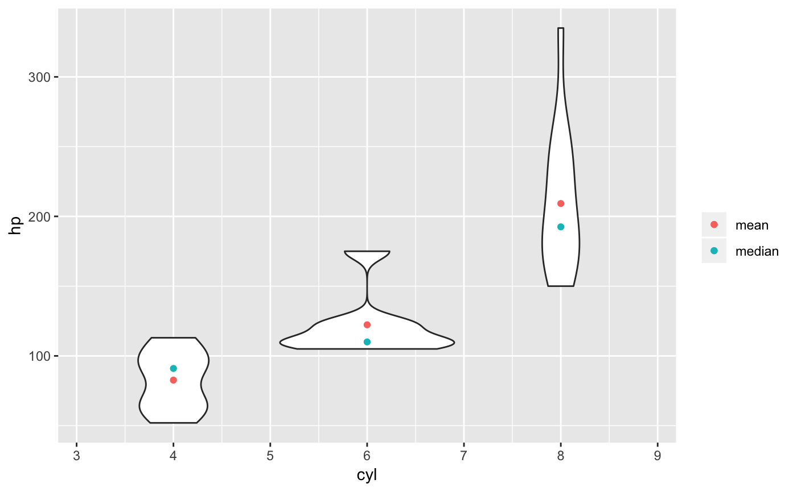
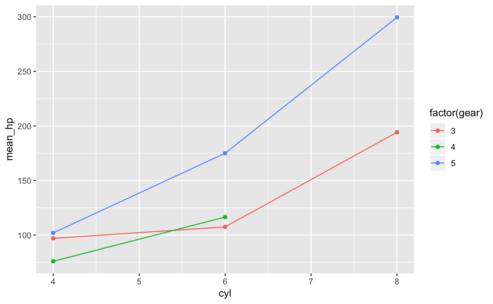

Creates a data frame of statistics calculated on one variable, possibly for each group formed by combinations of additional variables. The resulting data frame has one column for each of the statistics requested as well as columns for any grouping variables.
df_stats(formula, data, ..., drop = TRUE, fargs = list(), sep = "_", format = c("wide", "long"), groups = NULL, long_names = TRUE, nice_names = FALSE, na.action = "na.warn")
| formula | A formula indicating which variables are to be used.
Semantics are approximately as in |
|---|---|
| data | A data frame or list containing the variables. |
| ... | Functions used to compute the statistics. If this is empty,
a default set of summary statistics is used. Functions used must accept
a vector of values and return either a (possibly named) single value,
a (possibly named) vector of values, or a data frame with one row.
Functions can be specified with character strings, names, or expressions
that look like function calls with the first argument missing. The latter
option provides a convenient way to specify additional arguments. See the
examples.
Note: If these arguments are named, those names will be used in the data
frame returned (see details). Such names may not be among the names of the named
arguments of If a function is specified using |
| drop | A logical indicating whether combinations of the grouping
variables that do not occur in |
| fargs | Arguments passed to the functions in |
| sep | A character string to separate components of names. Set to |
| format | One of |
| groups | An expression to be evaluated in |
| long_names | A logical indicating whether the default names should include the name of the variable being summarized as well as the summarizing function name in the default case when names are not derived from the names of the returned object or an argument name. |
| nice_names | A logical indicating whether |
| na.action | A function (or character string naming a function) that determines how NAs are treated.
Options include |
A data frame. Names of columns in the resulting data frame consist of three
parts separated by sep.
The first part is the argument name, if it exists, else the function.
The second part is the name of the variable being summarised if long_names == TRUE and
the first part is the function name, else ""
The third part is the names of the object returned by the summarizing function, if they
exist, else a sequence of consecutive integers or "" if there is only one component
returned by the summarizing function.
See the examples.
Use a one-sided formula to compute summary statistics for the left hand side
expression over the entire data.
Use a two-sided formula to compute summary statistics for the left hand expression
for each combination of levels of the expressions occurring on the right hand side.
This is most useful when the left hand side is quantitative and each expression
on the right hand side has relatively few unique values. A function like
mosaic::ntiles() is often useful to create a few groups of roughly equal size
determined by ranges of a quantitative variable. See the examples.
Note that unlike dplyr::summarise(), df_stats() ignores
any grouping defined in data if data is a grouped tibble.
The use of | to define groups is tricky because (a) stats::model.frame()
doesn't handle this sort of thing and (b) | is also used for logical or. The
current algorithm for handling this will turn the first occurrence of | into an attempt
to condition, so logical or cannot be used before conditioning in the formula.
If you have need of logical or, we suggest creating a new variable that contains the
results of evaluating the expression.
Similarly, addition (+) is used to separate grouping variables, not for
arithmetic.
df_stats( ~ hp, data = mtcars)#> min Q1 median Q3 max mean sd n missing #> 1 52 96.5 123 180 335 146.6875 68.56287 32 0# There are several ways to specify functions df_stats( ~ hp, data = mtcars, mean, trimmed_mean = mean(trim = 0.1), "median", range, Q = quantile(c(0.25, 0.75)))#> mean_hp trimmed_mean median_hp range_hp_1 range_hp_2 Q_25% Q_75% #> 1 146.6875 141.1923 123 52 335 96.5 180# When using ::, be sure to include parents, even if there are no additional arguments. df_stats( ~ hp, data = mtcars, mean = base::mean(), trimmed_mean = base::mean(trim = 0.1))#> mean trimmed_mean #> 1 146.6875 141.1923# force names to by syntactically valid df_stats( ~ hp, data = mtcars, Q = quantile(c(0.25, 0.75)), nice_names = TRUE)#> Q_25. Q_75. #> 1 96.5 180# shorter names df_stats( ~ hp, data = mtcars, mean, trimmed_mean = mean(trim = 0.1), "median", range, long_names = FALSE)#> mean trimmed_mean median range_1 range_2 #> 1 146.6875 141.1923 123 52 335# wide vs long format df_stats( hp ~ cyl, data = mtcars, mean, median, range)#> cyl mean_hp median_hp range_hp_1 range_hp_2 #> 1 4 82.63636 91.0 52 113 #> 2 6 122.28571 110.0 105 175 #> 3 8 209.21429 192.5 150 335df_stats( hp ~ cyl, data = mtcars, mean, median, range, format = "long")#> cyl stat value #> 1 4 mean_hp 82.63636 #> 2 6 mean_hp 122.28571 #> 3 8 mean_hp 209.21429 #> 4 4 median_hp 91.00000 #> 5 6 median_hp 110.00000 #> 6 8 median_hp 192.50000 #> 7 4 range_hp_1 52.00000 #> 8 6 range_hp_1 105.00000 #> 9 8 range_hp_1 150.00000 #> 10 4 range_hp_2 113.00000 #> 11 6 range_hp_2 175.00000 #> 12 8 range_hp_2 335.00000# More than one grouping variable -- 3 ways. df_stats( hp ~ cyl + gear, data = mtcars, mean, median, range)#> cyl gear mean_hp median_hp range_hp_1 range_hp_2 #> 1 4 3 97.0000 97.0 97 97 #> 2 6 3 107.5000 107.5 105 110 #> 3 8 3 194.1667 180.0 150 245 #> 4 4 4 76.0000 66.0 52 109 #> 5 6 4 116.5000 116.5 110 123 #> 6 4 5 102.0000 102.0 91 113 #> 7 6 5 175.0000 175.0 175 175 #> 8 8 5 299.5000 299.5 264 335df_stats( hp ~ cyl | gear, data = mtcars, mean, median, range)#> cyl gear mean_hp median_hp range_hp_1 range_hp_2 #> 1 4 3 97.0000 97.0 97 97 #> 2 6 3 107.5000 107.5 105 110 #> 3 8 3 194.1667 180.0 150 245 #> 4 4 4 76.0000 66.0 52 109 #> 5 6 4 116.5000 116.5 110 123 #> 6 4 5 102.0000 102.0 91 113 #> 7 6 5 175.0000 175.0 175 175 #> 8 8 5 299.5000 299.5 264 335df_stats( hp ~ cyl, groups = gear, data = mtcars, mean, median, range)#> cyl gear mean_hp median_hp range_hp_1 range_hp_2 #> 1 4 3 97.0000 97.0 97 97 #> 2 6 3 107.5000 107.5 105 110 #> 3 8 3 194.1667 180.0 150 245 #> 4 4 4 76.0000 66.0 52 109 #> 5 6 4 116.5000 116.5 110 123 #> 6 4 5 102.0000 102.0 91 113 #> 7 6 5 175.0000 175.0 175 175 #> 8 8 5 299.5000 299.5 264 335# because the result is a data frame, df_stats() is also useful for creating plots if(require(ggformula)) { gf_violin(hp ~ cyl, data = mtcars, group = ~ cyl) %>% gf_point(mean_hp ~ cyl, data = df_stats(hp ~ cyl, data = mtcars, mean), color = ~ "mean") %>% gf_point(median_hp ~ cyl, data = df_stats(hp ~ cyl, data = mtcars, median), color = ~"median") %>% gf_labs(color = "") }# magrittr style piping is also supported if (require(ggformula)) { mtcars %>% df_stats(hp ~ cyl, mean, median, range) mtcars %>% df_stats(hp ~ cyl + gear, mean, median, range) %>% gf_point(mean_hp ~ cyl, color = ~ factor(gear)) %>% gf_line(mean_hp ~ cyl, color = ~ factor(gear)) }# can be used with a categorical response, too if (require(mosaic)) { df_stats(sex ~ substance, data = HELPrct, table, prop_female = prop) }#>#>#> #>#> #> #>#> #> #>#>if (require(mosaic)) { df_stats(sex ~ substance, data = HELPrct, table, props) }#>